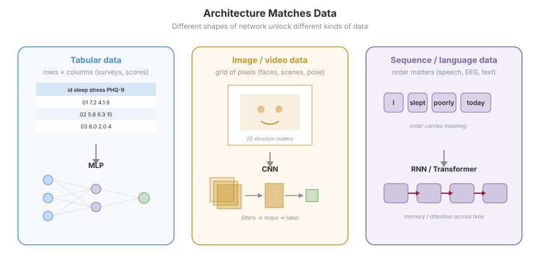
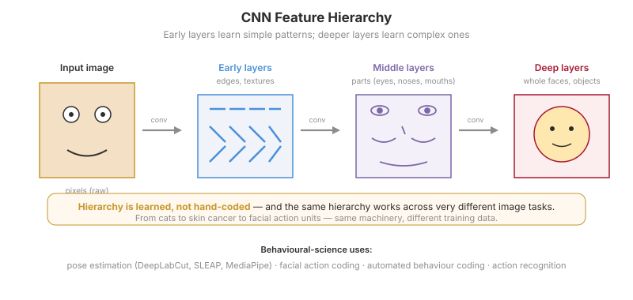
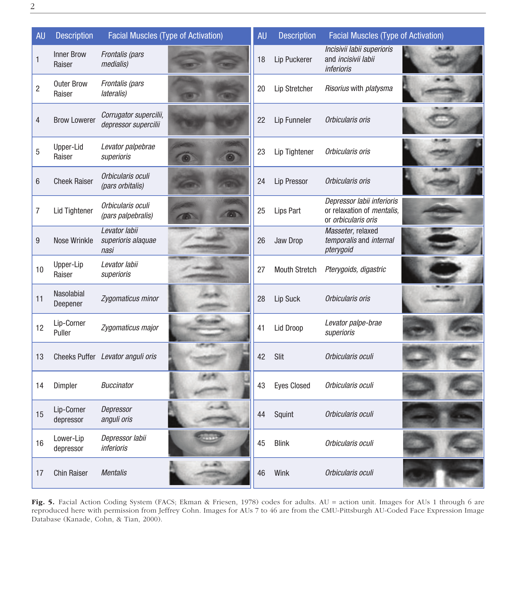
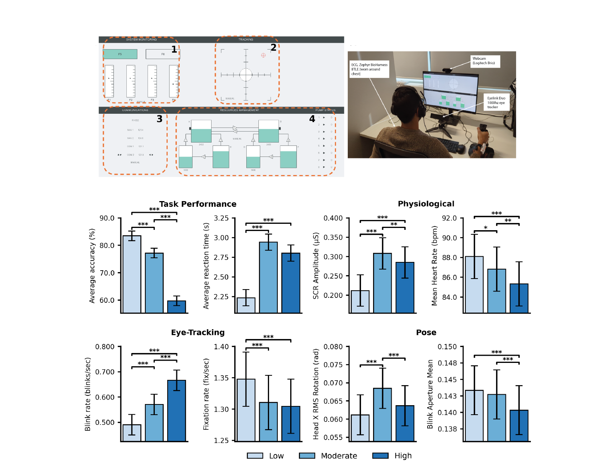
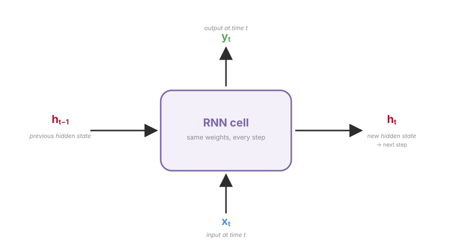
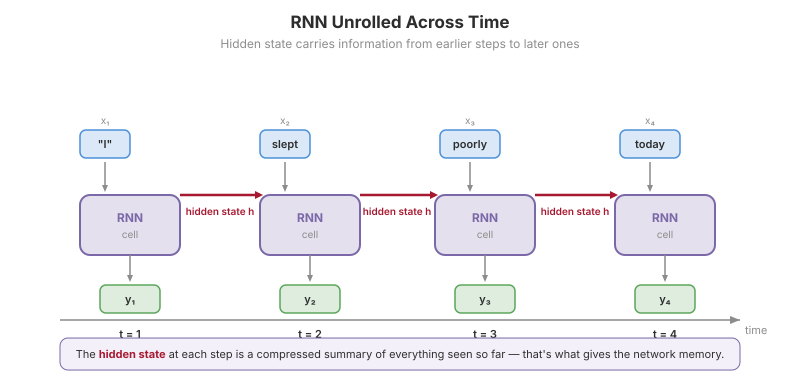
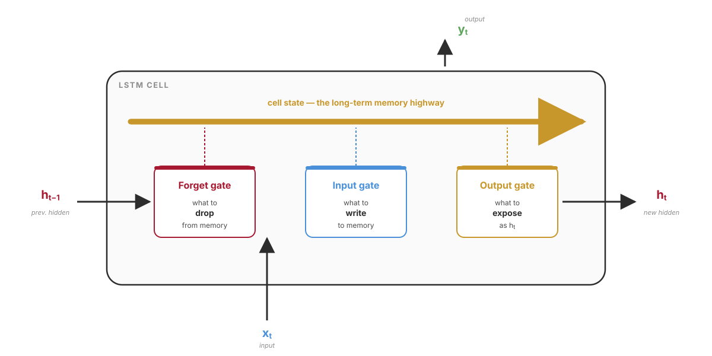
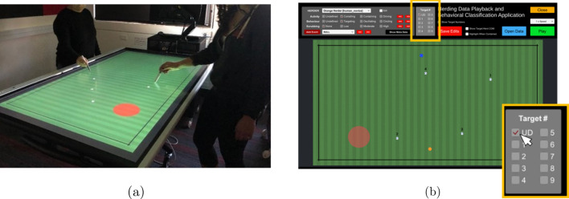
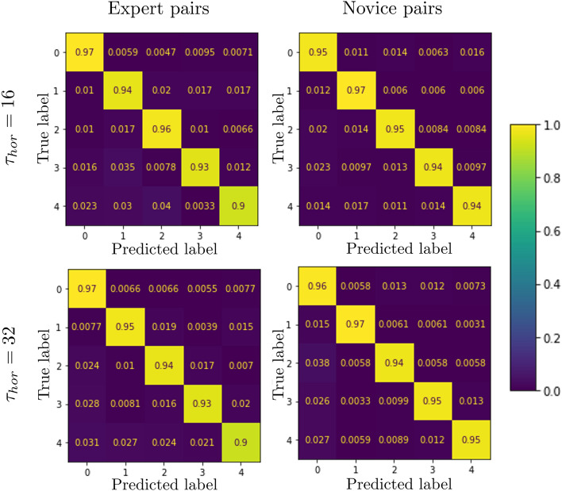
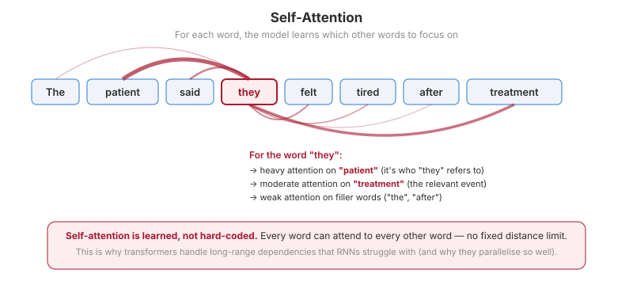

Today’s Plan
Deep Learning Architectures
- Architectures match the data
- CNNs — convolution, feature hierarchies
- Behavioural science applications: pose, action, faces
- RNNs and LSTMs — memory for sequences
- Case study: pose estimation for cognitive load
LLMs and Generative AI
- What an LLM actually is
- Tokens, embeddings, the geometry of meaning
- Self-attention and the transformer block
- Pre-training → instruction tuning → RLHF
- Image, video, audio — the rest of GenAI
Bridge from Weeks 9 and 10
In Week 10 you trained an MLP — a stack of fully-connected neurons that takes a flat vector in and produces a prediction.
- Fine for tabular data — rows of participants, columns of variables
- But real-world data has structure a flat MLP throws away
- Images have spatial structure (nearby pixels belong together)
- Speech, EEG, gesture have temporal structure (order matters)
- Language has both, plus long-range dependencies
When the architecture matches the structure of the data, fewer parameters do more. The network can learn useful features instead of needing them engineered by hand.
Deep Learning Architectures
CNNs, RNNs, and the shape of behavioural data
Three Data Types, Three Architectures
Tabular
Rows × columns. Order doesn’t matter. MLP works fine.
Images / Video
Spatial structure. Nearby pixels matter. CNN.
Sequences / Language
Temporal structure. Order matters. RNN/LSTM — or Transformer.
Same underlying maths (weights, activations, gradient descent) — different wiring to match the data.
Architectures Overview

What Is a Convolution?
A small learnable filter slides across the image. At each position it produces one number — how strongly its pattern is present there. Hundreds of filters per layer, all learned from data.
a vertical-edge detector
Bright = strong response. This filter responds strongly to vertical edges where the image goes from dark to light. Other filters (curves, textures, colour blobs) work the same way — they all get learned from data.
Stacked Layers Build a Hierarchy
- Early layers detect edges, textures, colour blobs
- Middle layers combine those into parts — an eye, a wheel, a corner of a mouth
- Later layers combine parts into whole objects — a face, a car, a posture
- Pooling between layers compresses spatial information so deeper layers can “see” a wider region
Nobody designs these features. The network discovers them. This is representation learning (Week 9) applied to images.
From Edges to Objects

ImageNet 2012
CNNs were niche for decades. Then Krizhevsky, Sutskever & Hinton (2012) halved the error rate on 1.2M images, 1,000 categories.
Within five years CNNs dominated every image task — and started spreading to medical imaging, video, and behavioural science.
Krizhevsky, A., Sutskever, I., & Hinton, G. (2012). ImageNet classification with deep CNNs. Communications of the ACM. doi.org/10.1145/3065386
CNNs in Behavioural Science: Pose Estimation
Marker-less pose estimation: CNNs trained to localise body landmarks in video frames. No physical markers, no calibrated rigs — just a phone camera.
DeepLabCut
Animal & human pose tracking, the foundational tool in behavioural neuroscience.
OpenPose
Real-time multi-person 2D pose for humans. Workhorse of gesture and gait research.
MediaPipe
Google’s on-device pose, face, hand tracking. Runs in a browser, runs on a phone.
Free, open-source, no marker set-up.
Two Ways to Estimate Pose
Top-Down
Detect people first, then find keypoints inside each box.
- Examples: HRNet, AlphaPose, ViTPose
- Accurate — each pose has its own crop
- Slower with many people (cost scales with N)
Bottom-Up
Find all keypoints first, then group them into people.
- Examples: OpenPose, MediaPipe
- Fast — cost is roughly constant with N
- Grouping is hard in crowded scenes
Same end product (keypoints per person) — very different inside.
Facial Expression Analysis & FACS
- Automated Facial Action Coding — CNN detects individual muscle movements (AUs)
- Microexpression detection in real time
- Emotion classification from combinations of AUs
- In use in clinical psychology, marketing, deception research
Be sceptical of “emotion”
Barrett et al. (2019) — thorough critique of inferring discrete emotion categories from facial movements.
Action units are measurable. “Anger” as a face is contested.

FACS Action Units (Ekman & Friesen, 1978). Figure from Barrett et al. (2019).
Automated Behaviour Coding
- Action recognition — what is the person doing in this clip? Walking, reaching, gesturing, falling.
- Observational coding — replacing thousands of hours of manual video review
- Mother–infant interaction studies — automated gaze, touch, vocalisation coding
- Clinical contexts — autism behavioural markers, motor symptoms in Parkinson’s, fall detection in aged care
One video clip in → one or more behavioural codes out. The CNN replaces (some of) the human rater. Speed and scale increase by orders of magnitude.
Case Study: Pose Estimation for Cognitive Load
Suppose you want to study cognitive load: when participants are mentally taxed, do their body movements change?
- Traditional approach: motion-capture suit, infrared markers, calibrated cameras — tens of thousands of dollars
- New approach: phone camera + a CNN + a classical ML model on top
- Same scientific question. Two orders of magnitude cheaper.
This is the integrated workflow: deep learning extracts features that classical ML then uses. Most applied behavioural pipelines look like this.
Inside the Study: OpenMATB + Pose
- Task: OpenMATB — four concurrent sub-tasks (system monitoring, tracking, communications, resource management)
- Manipulation: Low / Moderate / High workload conditions, controlled across sessions
- Participants: N = 49, each tested across all three conditions
- Synchronised recording: task performance + eye-tracking + heart rate / SCR + webcam video for pose
- Pose features: head RMS rotation, blink aperture, postural sway, derived from MediaPipe keypoints
Workload effects show up in every modality — performance, physiology, eye, and pose. Pose tracks workload as well as traditional physiological measures.

Patil et al. (under review) — Pose Estimation for Cognitive Workload Classification.
The Workflow
1. Record
Phone-camera video. No markers.
2. CNN Pose
DeepLabCut / MediaPipe extracts keypoints.
3. Features
Velocity, smoothness, postural sway, blink rate.
4. Classical ML
Random forest, logistic regression (Week 6).
5. Predict
Cognitive load state per trial.
The CNN replaces the marker-tracking hardware. The downstream ML is the same code you wrote in Week 6.
2D Pose Detection in Sport — AFL Example
Real game footage → CNN detects and tracks every player’s pose, in real time, no markers.
Multi-person 2D pose tracking on broadcast video. Same machinery, scaled from one webcam to a whole field of players.
Live Demo: Webcam → CNN Pose
Same machinery as the case study — running in your browser, on your webcam, in real time.
MediaPipe Pose & Face Mesh
Webcam stream → CNN extracts body / face keypoints → overlay drawn on top.
Launch live demo (new tab)Watching the CNN tag joints in real time is a useful sanity check — you can see which parts the model finds easy or hard.
Inside One RNN Cell
For sequences — speech, EEG, gestures — the network needs memory. The hidden state is that memory.

One machine. Applied step by step. The hidden state threads through every step, carrying a running summary of everything seen.
An RNN Unrolled Across Time

The same network repeated — with a hidden state threading through all the steps.
Vanishing and Exploding Gradients
Conceptually elegant. Practically, vanilla RNNs have a problem.
Vanishing gradients
When the network looks back across many steps, the learning signal shrinks toward zero — the RNN can’t learn long-range dependencies. It forgets.
Exploding gradients
Or the opposite — the signal grows uncontrollably and training becomes unstable. The network blows up.
Vanilla RNNs work fine on short sequences (10–20 steps) but struggle past that. We need gated memory.
Inside an LSTM Cell
Hochreiter & Schmidhuber (1997) — a memory cell with three learned gates running along a cell-state highway.

All three gates are learned from data. The network discovers what to remember, forget, share — and the cell-state highway lets gradients flow back through long sequences without vanishing.
Hochreiter, S., & Schmidhuber, J. (1997). Long short-term memory. Neural Computation. doi.org/10.1162/neco.1997.9.8.1735
Sequence Models in Psychological Research
Speech Recognition
Until around 2020, all major speech systems were RNN/LSTM-based. Now used in clinical voice analysis, child language research.
EEG & Physiological Signals
Sequence classifiers for brain–computer interface, sleep staging, seizure detection. LSTMs still dominate medical signals.
Gesture & Gait
Classify movements over time, predict next movements. Fall prediction in aged care, intent prediction in BCI.
Herding Behaviour
Auletta et al. (2023) — LSTM + SHAP predicted players’ next target before their conscious intent.
Auletta, F., Kallen, R. W., di Bernardo, M., & Richardson, M. J. (2023). Predicting and understanding human action decisions. Scientific Reports. doi.org/10.1038/s41598-023-31807-1
Inside the Study: Predicting Herding Decisions
Auletta et al. (2023) — an LSTM that predicts which target a player will pursue next, sometimes before they consciously decide.

(a) Two players around a multi-touch table herding targets · (b) Playback & classification interface
- Task: two players cooperatively corral 4 moving targets into a containment zone
- Data: player kinematics (position, velocity) + target states at 60 Hz
- Model: LSTM trained on short sequence windows to predict each player’s next target selection

Confusion matrices: expert vs novice pairs, at τhor = 16 and 32 (longer horizon).
Results: 90–97% accuracy across both skill levels and both horizons. The LSTM’s prediction often precedes the player’s reported conscious decision — movement gives away intent before the chooser knows.
Transformer Teaser: Self-Attention
The architecture that has eaten the world over the past five years is the transformer.
- For each element, look at every other element and learn how much each one matters
- No recurrence — fully parallel on a GPU
- No fixed-distance limit — any element can attend to any other
- Replaced RNNs/LSTMs for most language tasks after Vaswani et al. (2017)
- Via the Vision Transformer, increasingly replacing CNNs too
Full treatment of attention is coming up — it’s the engine inside every LLM.
Vaswani et al. (2017). Attention is all you need. NeurIPS. arxiv.org/abs/1706.03762
LLMs and Generative AI
Behind the curtain of ChatGPT
What an LLM Actually Is
Three ingredients, one outcome.
1. Transformer
The architecture from earlier in the lecture. Self-attention, stacked many times.
2. Next-token prediction
Given the text so far, predict the next token. That’s the entire training objective.
3. Scale
Billions of parameters, trillions of training tokens, thousands of GPUs.
That’s it. ChatGPT is “next token, but really big”. Everything else — helpfulness, refusal, formatting — comes from the post-training we’ll cover in a few slides.
Tokenisation: Chopping Up Text
An LLM doesn’t process letters or whole words — it processes tokens, which are typically subwords.
- Common words like
theare a single token - Rare or long words get split into pieces:
psychology→psych+ology - Subword tokenisation handles new compounds and rare words gracefully
- A typical model has a vocabulary of 30,000–100,000 tokens
Why does this matter? Tokens are the discrete units that get mapped to embeddings. The model never sees the text directly — it sees a sequence of integers.
Tokenisation in Action
Input sentence:
After tokenisation:
Each chip is one token → one integer ID:
From here on, the LLM is doing maths on integers, not letters.
Embeddings: Words as Vectors
Each token ID is mapped to a dense vector of numbers — typically 768 to 4,096 dimensions long.
cat [0.12, -0.43, 0.88, …, 0.05]
dog [0.18, -0.39, 0.85, …, 0.07]
Tuesday [-0.72, 0.31, 0.04, …, -0.89]
Vectors are learned so that similar tokens end up close together in space.
“cat” sits near “dog”. Far from “Tuesday”. “depressed” sits near “sad”, “lonely”, “anhedonic”. Far from “rollerblade”.
The closeness of vectors is the model’s representation of meaning. Nothing is stored about the letters — only about which other tokens this one tends to appear near.
Meaning as Geometry

Vector Arithmetic on Meaning
If meaning lives in geometry, you can do arithmetic on concepts.
- Famous example from Mikolov et al. (2013)
- Relationships between concepts show up as consistent vector directions
Paris − France + Italy ≈ Rome- The representations have structure — and that structure looks like the structure of meaning
Mikolov, T., Chen, K., Corrado, G., & Dean, J. (2013). Efficient estimation of word representations in vector space. arxiv.org/abs/1301.3781
Sentence and Document Embeddings
Pool the token embeddings for a whole interview transcript and you get one vector per document.
Now you can do quantitative things to qualitative data:
Cluster Transcripts
Quantitative thematic analysis — group similar interviews automatically.
Semantic Search
Find responses similar to a target answer, even if they share no exact words.
Track Change Over Time
Measure shifts in how someone describes their experience across sessions or years.
Auto-Coding Support
Pre-label transcript chunks for human review. Speeds qualitative analysis dramatically.
See Demszky et al. (2023) for a thorough review of LLMs in psychology. Nature Reviews Psychology. doi.org/10.1038/s44159-023-00241-5
Play With This Yourself
TensorFlow Embedding Projector
Hover over any word and see its nearest neighbours in 3D embedding space.
A surprisingly effective intuition pump for the “meaning is geometry” idea.
projector.tensorflow.orgTry the Word2Vec 10K demo. Type “depression” into the search box. Look at what comes up.
Self-Attention: The Intuition
For each token in the input, the model asks:
“Which other tokens should I pay attention to?”
- In “The cat sat on the mat because it was tired”, the word “it” needs to attend to “cat” (not “mat”) to resolve the pronoun
- In “The bank by the river was steep”, “bank” needs to attend to “river” to pick the right meaning
- The model learns these attention patterns from data — nobody writes them
- Attention patterns turn out to be interpretable: pronoun resolution, syntactic links, semantic groupings
An Attention Pattern, Visualised

Line thickness = attention weight. Some tokens attend strongly to one or two others; some spread their attention more evenly.
Q, K, V — Without Maths
Each token is projected into three vectors:
Query
“What am I looking for?”
Key
“What do I offer?”
Value
“What do I carry?”
- Compare each token’s Q to every other token’s K → attention scores
- Use those scores to weight the V vectors
- Result: a new representation for each token, mixed from the tokens it most needed to attend to
Multi-Head Attention & Stacked Blocks
- Multi-head: several attention “channels” in parallel, each learning a different kind of relationship
- One head might learn pronoun–referent links
- Another might learn subject–verb agreement
- A transformer block = one multi-head attention + a small feedforward network
- Modern LLMs stack 30–100+ blocks
Each block builds a richer representation. The output of block N is the input to block N+1.
From Pre-Training to ChatGPT
ChatGPT is not one training run. It is three stages, stacked.
1. Pre-training
Billions of pages of internet text. Predict the next token. No human labels.
2. Instruction Tuning
Fine-tune on (question, helpful answer) pairs written by humans.
3. RLHF
Humans rank outputs. Model learns to produce what humans prefer.
After Stage 1
The model is excellent at predicting plausible text but not at following instructions. Ask raw GPT “What is the capital of France?” and it might continue with “What is the capital of Germany?”.
“What ChatGPT knows” → pre-training.
“How ChatGPT behaves” → instruction tuning + RLHF.
Stages 2 & 3: Making It a Helpful Assistant
2. Instruction Tuning
Fine-tune on (question, helpful answer) pairs written by humans.
The model learns the form of being a helpful assistant.
3. RLHF
Reinforcement Learning from Human Feedback.
Humans rank pairs of model outputs. Model trained to produce outputs humans prefer.
- RLHF makes ChatGPT polite, helpful, and risk-averse
- It is also why ChatGPT sometimes refuses reasonable requests or hedges excessively — same training signal
- The original recipe is in Ouyang et al. (2022) — the InstructGPT paper
Ouyang et al. (2022). Training language models to follow instructions with human feedback. arxiv.org/abs/2203.02155
What LLMs Can and Can’t Do
- Hallucinations are not a bug — they’re a property of the architecture. The model predicts plausible next tokens, not true ones.
- Context window — how much the model can attend to at once. Modern models: 8,000 to 1,000,000 tokens.
- Tool use — newer models call out to calculators, search engines, code interpreters, partially mitigating hallucinations on facts and arithmetic.
Good at
Coding help, summarising, drafting, brainstorming, semantic search, qualitative coding support.
Bad at
Verifiable factual recall without a tool. Anything where the cost of being wrong is high and you can’t independently verify.
Vision-Language Models
Text and image share one context window: the model sees both and reasons about them together.
GPT-4o (OpenAI)
Reads screenshots, diagrams, scanned documents, charts.
Gemini (Google)
Long context (1M+ tokens), strong document and chart understanding.
Claude (Anthropic)
Vision + reasoning, screenshot interpretation, document parsing.
Open-source: LLaVA, Qwen-VL
Comparable open-weight models you can run locally — essential when data can’t leave your machine.
Research uses
Auto-code behavioural images, score facial expressions, parse scanned questionnaires, accessibility tools.
Caveats
Same risks as text LLMs — hallucinations, bias, confident wrong answers on edge cases. Verify before trusting.
Common Misconceptions
What You’ve Built Over 11 Weeks
Supervised ML
Regression, regularisation, classification, trees, random forests.
Unsupervised ML
Clustering, PCA, UMAP — finding structure without labels.
Neural Networks
From perceptron to MLP to a working PyTorch model on real EEG data.
Deep Learning & LLMs
CNNs, RNNs, transformers, embeddings — the map of everything-else.
You started this course with no coding and no ML background. You finish it with a working understanding of every major area of modern data science — and the LLM skills to keep going.
Week 12: The Viva
- Viva definition pool — released today in
weeks/week-12-viva-review/ - Short-answer pool — also released today
- Questions drawn from across all 11 weeks
- Format: short, structured, focused on understanding not memorisation
- Week 13 — a discussion seminar on where the field is going and how to use these tools responsibly in your honours project
How to study
Skim each week’s companion reading. Walk through the slide deck’s key figures.
For lab weeks, re-open your notebooks — the act of running a cell brings the concept back.
Use the AI as your study partner. Ask it to quiz you.